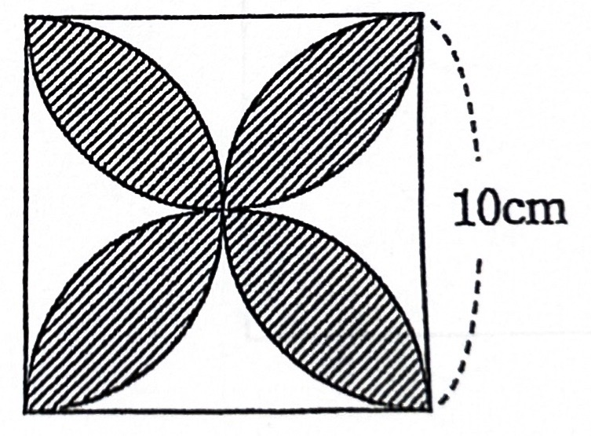
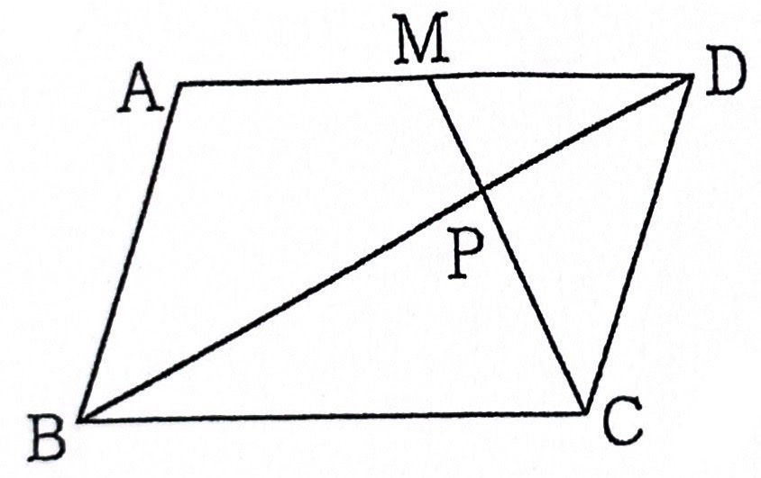
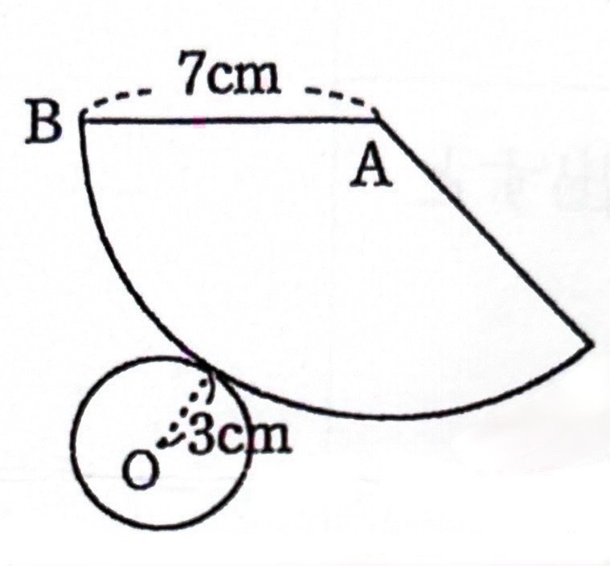
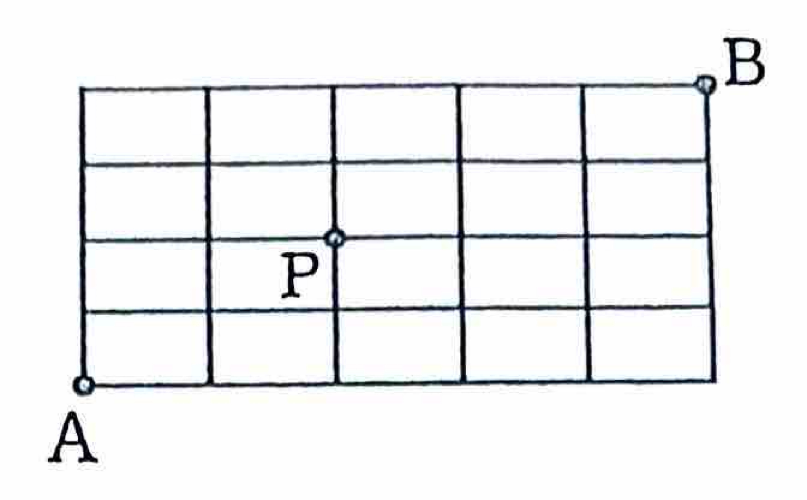

応用問題
数学 応用問題
数と式・方程式・図形・確率の応用問題
数と式
No.1
整数$A$を$6$で割ると$3$余り、整数$B$を$6$で割ると$4$余る。
$A+B$、$AB$をそれぞれ$6$で割った余りを求めよ。
$A+B$、$AB$をそれぞれ$6$で割った余りを求めよ。
【解答】
$A = 6k + 3, B = 6l + 4$ と置けます。
$A+B = (6k+3) + (6l+4) = 6(k+l) + 7 = 6(k+l+1) + 1$ → 余り 1
$AB = (6k+3)(6l+4) = 36kl + 24k + 18l + 12$
$12$は$6$で割り切れるため、すべて$6$の倍数。よって余り 0
$A+B = (6k+3) + (6l+4) = 6(k+l) + 7 = 6(k+l+1) + 1$ → 余り 1
$AB = (6k+3)(6l+4) = 36kl + 24k + 18l + 12$
$12$は$6$で割り切れるため、すべて$6$の倍数。よって余り 0
No.1 類題
整数$A$を$5$で割ると$2$余り、整数$B$を$5$で割ると$3$余る。
$A+B$、$AB$をそれぞれ$5$で割った余りを求めよ。
$A+B$、$AB$をそれぞれ$5$で割った余りを求めよ。
【類題の解答】
$A+B$：余りの和 $2+3=5$ を5で割ると余りは 0
$AB$：余りの積 $2 \times 3 = 6$ を5で割ると余りは 1
$AB$：余りの積 $2 \times 3 = 6$ を5で割ると余りは 1
No.2
$252$の正の約数の個数を求めよ。
【解答】
$252$を素因数分解します。
$252 = 2 \times 126 = 2^2 \times 63 = 2^2 \times 9 \times 7 = 2^2 \times 3^2 \times 7^1$
$252 = 2 \times 126 = 2^2 \times 63 = 2^2 \times 9 \times 7 = 2^2 \times 3^2 \times 7^1$
約数の個数は、各指数の数に$1$を足して掛け合わせます。
$(2 + 1) \times (2 + 1) \times (1 + 1) = 3 \times 3 \times 2 = 18$
答え： 18個
$(2 + 1) \times (2 + 1) \times (1 + 1) = 3 \times 3 \times 2 = 18$
答え： 18個
No.2 類題
$360$の正の約数の個数を求めよ。
【類題の解答】
$360 = 2^3 \times 3^2 \times 5^1$
$(3+1)(2+1)(1+1) = 4 \times 3 \times 2 = $ 24個
$(3+1)(2+1)(1+1) = 4 \times 3 \times 2 = $ 24個
No.4
(1) 2進数$110011$を10進数で表せ。
(2) $73$を2進数で表せ。
(2) $73$を2進数で表せ。
【解答】
(1) $32+16+2+1 = $ 51
(2) $73 = 64+8+1 \rightarrow$ 1001001(2)
(2) $73 = 64+8+1 \rightarrow$ 1001001(2)
No.4 類題
(1) 2進数$101010$を10進数で表せ。
(2) $50$を2進数で表せ。
(2) $50$を2進数で表せ。
【類題の解答】
(1) $32+8+2 = $ 42
(2) $50 = 32+16+2 \rightarrow$ 110010(2)
(2) $50 = 32+16+2 \rightarrow$ 110010(2)
No.5
1から200までの整数のうち、次のような数の個数を求めよ。
(1) 5で割り切れる数
(2) 5でも7でも割り切れる数
(3) 5または7で割り切れる数
(1) 5で割り切れる数
(2) 5でも7でも割り切れる数
(3) 5または7で割り切れる数
【解答】
(1) $200 \div 5 = 40$ 40個
(2) $5$と$7$の公倍数($35$)。$200 \div 35 = 5 \dots$ 5個
(3) $7$の倍数は$28$個。$40 + 28 - 5 =$ 63個
(2) $5$と$7$の公倍数($35$)。$200 \div 35 = 5 \dots$ 5個
(3) $7$の倍数は$28$個。$40 + 28 - 5 =$ 63個
No.5 類題
1から100までの整数のうち、次のような数の個数を求めよ。
(1) 6で割り切れる数
(2) 6でも8でも割り切れる数
(3) 6または8で割り切れる数
(1) 6で割り切れる数
(2) 6でも8でも割り切れる数
(3) 6または8で割り切れる数
【類題の解答】
(1) $100 \div 6 = 16$ 16個
(2) $6$と$8$の公倍数($24$)。$100 \div 24 = 4 \dots$ 4個
(3) $8$の倍数は$12$個。$16 + 12 - 4 =$ 24個
(2) $6$と$8$の公倍数($24$)。$100 \div 24 = 4 \dots$ 4個
(3) $8$の倍数は$12$個。$16 + 12 - 4 =$ 24個
No.6
50人の生徒。運動部22人、文化部25人、帰宅部(どちらでもない)10人。
両方に所属している者は何人か？
両方に所属している者は何人か？
【解答】
部活所属者 $= 50 - 10 = 40$人。
$(22 + 25) - x = 40$ より $47 - x = 40$
答え： 7人
$(22 + 25) - x = 40$ より $47 - x = 40$
答え： 7人
No.6 類題
40人の生徒のうち、犬が好きな人は25人、猫が好きな人は20人、どちらも嫌いな人は5人いる。犬も猫も両方好きな人は何人か？
【類題の解答】
どちらかが好きな人 $= 40 - 5 = 35$人。
$(25 + 20) - x = 35 \rightarrow 45 - x = 35$
答え： 10人
$(25 + 20) - x = 35 \rightarrow 45 - x = 35$
答え： 10人
No.7
(1) $x = \frac{\sqrt{5} - \sqrt{2}}{\sqrt{2}}, y = \frac{\sqrt{5} + \sqrt{2}}{\sqrt{2}}$ のとき、$x^2 + y^2$ の値。
(2) $\sqrt{10}$ の小数部分を $a$ とするとき、$a^2 + 6a$ の値。
(2) $\sqrt{10}$ の小数部分を $a$ とするとき、$a^2 + 6a$ の値。
【解答】
(1) $x+y=\sqrt{10}, xy=\frac{3}{2}$。$x^2+y^2=(x+y)^2-2xy = 10-3=$ 7
(2) $\sqrt{10}$は$3.\dots$ なので $a=\sqrt{10}-3$。
$a(a+6) = (\sqrt{10}-3)(\sqrt{10}+3) = 10-9=$ 1
(2) $\sqrt{10}$は$3.\dots$ なので $a=\sqrt{10}-3$。
$a(a+6) = (\sqrt{10}-3)(\sqrt{10}+3) = 10-9=$ 1
方程式
No.8
$8\%$の食塩水$500\text{g}$に$20\%$の食塩水を混ぜて$10\%$にしたい。
$20\%$の食塩水は何$\text{g}$必要か。
$20\%$の食塩水は何$\text{g}$必要か。
【解答】
混ぜる量を$x$とする。
$500 \times 0.08 + 0.2x = (500+x) \times 0.1 \to 40 + 0.2x = 50 + 0.1x$
$0.1x = 10 \to x=100$
答え： 100g
$500 \times 0.08 + 0.2x = (500+x) \times 0.1 \to 40 + 0.2x = 50 + 0.1x$
$0.1x = 10 \to x=100$
答え： 100g
No.8 類題
$6\%$の食塩水$300\text{g}$に$15\%$の食塩水を混ぜ合わせて、$12\%$の食塩水を作りたい。15%の食塩水を何g混ぜたらよいか。
【類題の解答】
$300 \times 0.06 + 0.15x = (300+x) \times 0.12$
$18 + 0.15x = 36 + 0.12x \rightarrow 0.03x = 18 \rightarrow x = 600$
答え： 600g
$18 + 0.15x = 36 + 0.12x \rightarrow 0.03x = 18 \rightarrow x = 600$
答え： 600g
No.9
$10\%$と$5\%$の食塩水を混ぜて、$8\%$の食塩水$400\text{g}$を作りたい。それぞれ何gずつ混ぜればよいか。
【解答】
$x+y=400, 0.1x+0.05y=32$ を解く。
答え： 10%が240g、5%が160g
答え： 10%が240g、5%が160g
No.10
$7\%$と$4\%$の食塩水を混ぜて、$5\%$の食塩水$150\text{g}$を作りたい。それぞれ何gずつ混ぜればよいか。
【解答】
天秤算：濃度差 $2:1$ なので量は逆比 $1:2$。
$150 \div 3 = 50$。
答え： 7%が50g、4%が100g
$150 \div 3 = 50$。
答え： 7%が50g、4%が100g
No.11
みかんを配る。一人に3個ずつ配ると5個余り、4個ずつ配ると3個足りなくなる。子どもの人数とみかんの個数を求めよ。
【解答】
$3x + 5 = 4x - 3 \rightarrow x = 8$
答え： 子供8人、みかん29個
答え： 子供8人、みかん29個
No.11 類題
飴を何人かに配るのに、一人に3個ずつ配ると10個余り、5個ずつ配ると4個足りなくなる。子どもの人数と飴の個数を求めよ。
【類題の解答】
$3x + 10 = 5x - 4 \rightarrow 2x = 14 \rightarrow x = 7$
答え： 子供7人、飴31個
答え： 子供7人、飴31個
No.12
りんごを配る。1人に3個ずつ分けると9個残り、1人に5個ずつ分けると1人の子どもだけは4個しかもらえなくなる。子どもの人数とりんごの個数。
【解答】
$3x + 9 = 5(x-1) + 4 \rightarrow 3x+9 = 5x-1 \rightarrow 2x=10$
答え： 子供5人、りんご24個
答え： 子供5人、りんご24個
No.13
$|x-2| < 4$ を満たす整数$x$の個数を求めよ。
【解答】
$-4 < x - 2 < 4$ より、各辺に$2$を足して $-2 < x < 6$。
整数は $-1, 0, 1, 2, 3, 4, 5$ の計 7個。
整数は $-1, 0, 1, 2, 3, 4, 5$ の計 7個。
No.13 類題
$|x-3| < 5$ を満たす整数$x$の個数を求めよ。
【類題の解答】
$-5 < x - 3 < 5$ より、各辺に$3$を足して $-2 < x < 8$。
整数は $-1, 0, 1, 2, 3, 4, 5, 6, 7$ の計 9個。
整数は $-1, 0, 1, 2, 3, 4, 5, 6, 7$ の計 9個。
図形
No.14
正六角形について、(1) 1つの内角の大きさ (2) 1つの外角の大きさ
【解答】
内角：$180(6-2) \div 6 =$ 120度
外角：$360 \div 6 =$ 60度
外角：$360 \div 6 =$ 60度
No.14 類題
正八角形について、(1) 1つの内角の大きさ (2) 1つの外角の大きさ
【類題の解答】
内角：$180(8-2) \div 8 = 1080 \div 8 =$ 135度
外角：$360 \div 8 =$ 45度
外角：$360 \div 8 =$ 45度
No.15
1辺$10\text{cm}$の正方形の内部に、辺を直径とする半円を4つ書いた花びら型の斜線部分の面積。

【解答】
(半円4つ) - (正方形) で求まります。
$(25\pi \div 2 \times 4) - 100 =$ 50π - 100 (cm2)
$(25\pi \div 2 \times 4) - 100 =$ 50π - 100 (cm2)
No.16
平行四辺形ABCD。MはADの中点。PはBDとCMの交点。$\triangle \text{PMD}=3\text{cm}^2$のとき、四角形ABCMの面積。

【解答】
相似比 $1:2$ より $\triangle \text{PCB}=12$。底辺比 $1:2$ より $\triangle \text{PCD}=6$。
平行四辺形の半分 $=18$、全体 $=36$。
引く部分 $(\triangle \text{MCD}) = 3+6=9$。
答え： 27 cm2
平行四辺形の半分 $=18$、全体 $=36$。
引く部分 $(\triangle \text{MCD}) = 3+6=9$。
答え： 27 cm2
No.17
円錐の展開図。側面（扇形）の半径(母線)が7cm、底面の円の半径が3cm。この円錐の体積を求めよ。

【解答】
高さ $h = \sqrt{7^2 - 3^2} = \sqrt{40} = 2\sqrt{10}$
$V = \frac{1}{3} \pi 3^2 \times 2\sqrt{10} =$ 6√10π cm3
$V = \frac{1}{3} \pi 3^2 \times 2\sqrt{10} =$ 6√10π cm3
確率・場合の数
No.18
$8$人から委員長、副委員長、書記を1名ずつ選ぶ方法は何通りか。
【解答】
$_8P_3 = 8 \times 7 \times 6 =$ 336通り
No.18 類題
$10$人の生徒から、会長・副会長・書記を1名ずつ選ぶ方法は何通りか。
【類題の解答】
$_{10}P_3 = 10 \times 9 \times 8 =$ 720通り
No.19
$0, 1, 2, 3, 4$ から異なる3個を用いて作れる3桁の偶数は何個か。
【解答】
一の位が0：$4 \times 3 = 12$
一の位が2：$3 \times 3 = 9$ (百の位に0不可)
一の位が4：$3 \times 3 = 9$
合計： 30個
一の位が2：$3 \times 3 = 9$ (百の位に0不可)
一の位が4：$3 \times 3 = 9$
合計： 30個
No.20
男子4人、女子3人の計7人が一列に並ぶ。
(1) 男子が両端にくる (2) 女子が隣り合わない
(1) 男子が両端にくる (2) 女子が隣り合わない
【解答】
(1) $_4P_2 \times 5! = 12 \times 120 =$ 1440通り
(2) 男子並べ($4!$)、隙間に女子($_5P_3$)：$24 \times 60 =$ 1440通り
(2) 男子並べ($4!$)、隙間に女子($_5P_3$)：$24 \times 60 =$ 1440通り
No.21
図のような格子状の道路がある。AからBへ行く最短経路は何通りあるか。
(1) 全経路
(2) 点Pを通る経路
(1) 全経路
(2) 点Pを通る経路

【解答】
(1) 全経路
図より、横に5区画、縦に4区画（合計9移動）必要です。
$\displaystyle {}_9\mathrm{C}_4 = \frac{9 \times 8 \times 7 \times 6}{4 \times 3 \times 2 \times 1} = $ 126通り
図より、横に5区画、縦に4区画（合計9移動）必要です。
$\displaystyle {}_9\mathrm{C}_4 = \frac{9 \times 8 \times 7 \times 6}{4 \times 3 \times 2 \times 1} = $ 126通り
(2) 点Pを通る経路
A $\to$ P ： 横2、縦2の移動 $\displaystyle {}_4\mathrm{C}_2 = 6$ 通り
P $\to$ B ： 横3、縦2の移動 $\displaystyle {}_5\mathrm{C}_2 = 10$ 通り
積の法則により $6 \times 10 = $ 60通り
A $\to$ P ： 横2、縦2の移動 $\displaystyle {}_4\mathrm{C}_2 = 6$ 通り
P $\to$ B ： 横3、縦2の移動 $\displaystyle {}_5\mathrm{C}_2 = 10$ 通り
積の法則により $6 \times 10 = $ 60通り
No.22
男子8人、女子7人から5人選ぶ。(1) 選び方全通り (2) 男子3人女子2人選ぶ方法
【解答】
(1) $_{15}C_5 =$ 3003通り
(2) $_8C_3 \times _7C_2 = 56 \times 21 =$ 1176通り
(2) $_8C_3 \times _7C_2 = 56 \times 21 =$ 1176通り
No.23
赤3個、白2個から2個取り出す。(1) 2個とも赤 (2) 赤白1個ずつ
【解答】
全事象 $_5C_2=10$。
(1) $_3C_2 = 3 \rightarrow$ 3/10
(2) $_3C_1 \times _2C_1 = 6 \rightarrow$ 3/5
(1) $_3C_2 = 3 \rightarrow$ 3/10
(2) $_3C_1 \times _2C_1 = 6 \rightarrow$ 3/5
No.23 類題
赤4個、白3個から2個取り出す。(1) 2個とも赤 (2) 赤白1個ずつ
【類題の解答】
全事象 $_7C_2=21$。
(1) $_4C_2 = 6 \rightarrow$ 2/7
(2) $_4C_1 \times _3C_1 = 12 \rightarrow$ 4/7
(1) $_4C_2 = 6 \rightarrow$ 2/7
(2) $_4C_1 \times _3C_1 = 12 \rightarrow$ 4/7